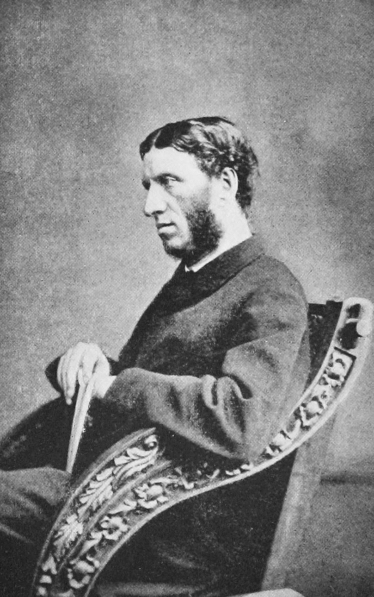

Online and asynchronous modalities remove real-time interaction and feedback.
Digital humanities courses blend technical and interpretive work — and it’s hard to scaffold both.
Student motivation drops when learning feels passive or disconnected from their lives.
Active Learning Principles
Students learn by doing, not watching — aim for more tasks, fewer lectures.
Low-stakes, frequent activities outperform high-stakes assessments for retention.
In async contexts it’s especially important that tasks are genuine, so they don’t feel like busy work.
Questions No Computer Can Answer
Langmead & Vee — their approach to DH
Asking “questions that no computer can answer.”
— Langmead & Vee
The computer might facilitate the answering, but the question is the humanities part.
This matters even more as AI seems able to answer — or ask — questions for us.
An Obligation to Teach the Implications
Langmead & Vee — digitality across the disciplines
“The humanities, like all disciplines, must not only grapple with what pervasive digitality means for our work; we also have an obligation to teach these implications to our students.”
— Langmead & Vee
They want students to “draw on their emerging understandings of computation in their own fields” and to “explore computation within the contexts of their other courses and majors.”
Humans All the Way Down
Langmead & Vee — the course mantra
“That computers were designed by, operated by, programmed by, and used by humans is captured in a mantra we often repeat in the course: it is humans all the way down.”
— Langmead & Vee
A way to demystify technology — and to keep the human centered in a humanities classroom.
Many Angles on Technology
Langmead & Vee — mix and match for your course
“We discuss both historical and contemporary questions about how computers work, what they can and cannot do, how they serve or do not serve us, and what they are made to do (in both senses of that verb).”
— Langmead & Vee
Lots of entry points exist — choose the angles that fit your course.
A Model for New Courses
Langmead & Vee — navigating the institution
As you imagine proposing courses that don’t exist yet, their account of the institutional work is a useful model:
“Learned to draw on our personal connections through a burgeoning university-wide DH network, to collaborate from the vantage point of our individual disciplines, to garner sponsorship for a pilot version of the course, and then to leverage the university’s general education requirements in order to make our course sustainable.”
— Langmead & Vee
Inclusive Pedagogy as Motivation
Curriculum design, not just classroom climate
Inclusion means curriculum design, not just classroom climate.
Students engage more when materials relate to them — contemporary examples, shared experiences, cultural connection.
This is a challenge in DH because, as Prince & Messina note, the field is very white.
Black DH asks: whose questions does DH ask? Whose archives? Whose methods?
Black DH and Citational Politics
Prince & Messina — citation is not neutral
Prince & Messina argue that a radical politics of inclusivity is fundamental to the field, and that citational practices are crucial.
Who’s on your syllabus?
Which scholars are highlighted for your students — and which aren’t?
Compare Kishonna Gray’s #CiteHerWork.
Making the Hidden Curriculum Legible
Prince & Messina — leveling the playing field
They walk through every step they took to make the “hidden curriculum” of academic publishing legible to junior scholars.
Aimed at grad students and early-career scholars — but the structure carries to earlier stages too:
What do people need to know that they might not already know?
How can you level the playing field by providing that foundation?
AI Content Bypasses Professional Judgment
A critical read of Mollick
Mollick frames instructor expertise as “vetting” AI outputs — positioning teachers as quality-checkers rather than knowledge-makers.
Good examples and explanations aren’t generic; they respond to specific students, contexts, and moments an instructor knows and AI does not.
Offloading that work gradually erodes the pedagogical craft that comes from doing it yourself.
Assessment Is Not a Production Problem
A critical read of Mollick
“Use AI to generate quiz questions” assumes test-writing is a time burden — but designing assessment is the intellectual work of deciding what matters.
Low-stakes tests work because they align with specific learning objectives and student contexts.
“Muddiest point” exercises lose their value if AI summarizes responses instead of the instructor reading them — and if they write it, we owe it to them to read it.
Efficiency Framing Devalues Teaching
A critical read of Mollick
Mollick — and much of the AI-for-teaching space — frames pedagogy as a burden to be lightened rather than a practice to be developed: tasks to automate, not a skill that deepens over time.
Historically, tools that “save teacher time” have been used to justify larger classes, fewer instructors, and reduced investment.
Efficiency gains rarely stay with teachers.
“The Best That Has Been Thought and Said”
Dan Cohen — Matthew Arnold, the canon, and training data
Cohen invokes Arnold’s framing of culture as “the best that has been thought and said.”
His point: serious work with LLMs needs reliable training data, not just any random thing from the internet.
But the phrase has historically marginalized non-canonical culture — working-class, women’s, racialized, and postcolonial cultures.

Matthew Arnold, 1869 (Hills & Saunders). Public domain.
Books as AI’s Achilles’ Heel
Cohen — a library-led training set
“A library-led training data set of books would diversify and strengthen the development of AI.”
— Dan Cohen
Google Books, HathiTrust, and similar initiatives have already “worked through many of the most challenging copyright issues, at least for how fair use applies to nonprofit research uses such as computational analysis.”
Why Libraries Are Suited to This
Cohen — a public-interest disposition
Academic libraries already “have a public-interest disposition that can take into account the particular social and ethical challenges of AI development.”
— Dan Cohen
The institution’s values — not just its holdings — are the qualification.
This Week
Discussion: AI Exercise Design (due Sunday, June 21). Design an AI-related exercise for your course. How does it use active learning principles? What would students do with AI, and what would they learn? How does it connect to your learning objectives? Use Claude Artifacts to prototype or model the exercise.
Aim for a genuine, low-stakes, doing-not-watching task — one whose questions a computer can’t answer for the student.
Readings: Langmead & Vee, “Teaching the Digital Humanities to a Broad Undergraduate Population”; Prince & Messina, “Black Digital Humanities for the Rising Generation”; Mollick, “Using AI to Make Teaching Easier and More Impactful”; Cohen, “Books Are Big AI’s Achilles’ Heel.”
See weeks/week-06.md on Canvas for full reading links and the discussion prompt.